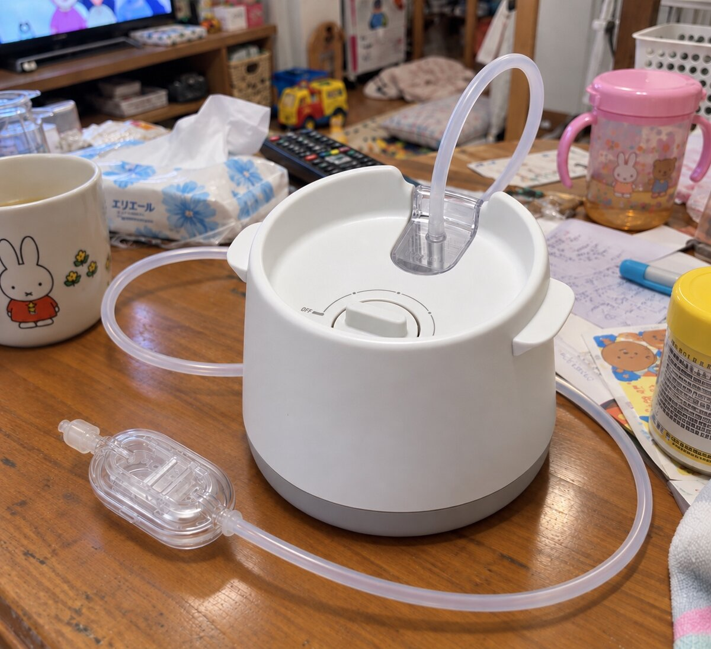

子どもの鼻水を吸うと、親も風邪をひいていた頃
以前はダイソーで買った、口で吸うタイプの鼻吸い器を使っていました。手軽に買えましたが、使っていた頃は私も子どもの風邪をよくもらっていました。子どものお世話をしながら自分も体調を崩すのは、なかなかしんどいものです。
SHUPOTに替えてからは、わが家ではそのような経験がなくなりました。口で吸う必要がなくなったことも、私には大きな変化でした。
ただし、当時の感染経路を調べたわけではありません。口で直接吸うタイプなら必ず風邪がうつる、電動式なら感染しないという意味ではなく、ここでは買い替え前後にわが家で起きたこととしてお伝えしています。
鼻風邪のときに使って、助かった三つのこと
わが家では毎日使うというより、鼻風邪のときに出しています。私がよかったと感じるのは、よく吸えること、手入れが楽なこと、操作が簡単なことです。
鼻づまりが少し楽になり、夜も眠りやすそうだった
使った後は子どもの鼻づまりが少し楽になり、夜も寝やすくなりました。鼻水が気になるときに、家でできるお世話が一つ増えたことが助かっています。
もちろん、毎回同じように吸えるわけでも、吸えば必ずぐっすり眠れるわけでもありません。「よく吸える」というのは、わが家での使用感です。他の電動鼻吸い器と吸引力を測って比べた結果ではありません。
風邪の治療効果と、鼻水を取った後の過ごしやすさは分けて考えています。
回復も早いように感じましたが、治るまでの日数を比較したわけではありません。購入を考える方に伝えたいのは、「風邪が早く治る」という約束ではなく、わが家では鼻づまりが少し楽になり、夜も眠りやすくなったという経験です。
毎回洗うのは、チューブ先端の部品だけ
SHUPOTで私が特に助かっているのが、お手入れの楽さです。普段、使うたびに洗うのは、チューブの先に付いているフィット鼻ノズルと鼻水キャッチャー。長いシリコーンチューブや本体まで、毎回洗う必要はありません。
鼻風邪の日は、鼻吸いだけでなく、着替えや水分補給、寝かしつけなどにも手がかかります。使い終わった後に洗う部分が少ないので、「片付けが大変だから今日はやめよう」となりにくい。この手軽さは、実際に使い続けるうえでSHUPOTの大きなよさだと感じています。
操作が簡単で、鼻風邪のときに使いやすい
組み立てから吸引までの流れも難しくありません。久しぶりに出したときでも、操作が分かりやすいと感じています。
- 先端を組み立てる：鼻水キャッチャー本体にセパレーターとふたを取り付け、太い方の先にフィット鼻ノズルを差し込みます。
- チューブをつなぐ：鼻水キャッチャーと本体をシリコーンチューブでつなぎます。
- 電源を準備する：ダイヤルがOFFになっていることを確かめてから、ACアダプターを本体とコンセントにつなぎます。
- 吸引する：ダイヤルを回して弱い吸引力から始め、子どもの様子と鼻水の状態を見ながら少しずつ調節します。終わったらダイヤルをOFFに戻します。
鼻に器具を当てるので、わが家の子も慣れるまでは嫌がることがありました。
基本は「先端を組み立てる、チューブをつなぐ、ダイヤルを回す」という流れです。初めて使うときは、ピジョン公式の使い方動画と取扱説明書を一度見ておくと迷いにくいです。

お手入れが楽なのは、鼻水を先端で受け止めるから
SHUPOTは、チューブ先端の鼻水キャッチャーで鼻水を受け止める仕組みです。普段のお手入れでは、フィット鼻ノズルと鼻水キャッチャーを外して洗います。シリコーンチューブは鼻水に触れないため、メーカーも毎回洗う必要はないと案内しています。洗う部品がチューブの先にまとまっているので、使った後の片付けが短く済みます。
鼻水がチューブに流れ込んだときや、チューブを洗ったときは、中の水分を切って十分に乾燥させます。部品の外し方や消毒・除菌の方法は、手元の取扱説明書に従います。本体や電源部は水洗いしません。
以前から使っている方は、改良部品の対象も確認
メーカーは2023年6月～2025年7月製造の対象製品について、鼻水キャッチャーの改良部品を無償配布しています。対象の見分け方と申込方法は、ピジョンの改良部品配布案内で確認できます。
分解したキャッチャーにチューブを付けたまま作動させず、使用後は電源プラグを抜き、子どもの手が届かない場所へ片付けます。改良品でも正しい取り扱いが必要です。
買う前に、わが家の困りごとに合うか考える
| 気になっていること | わが家の感想・確認したいこと |
|---|---|
| 口で吸うのが負担 | 電動式に替えて、親が口で吸う必要がなくなりました。 |
| 鼻水を取った後の手入れ | 普段、毎回洗うのはチューブ先端のフィット鼻ノズルと鼻水キャッチャーです。チューブまで毎回洗わずに済む点が助かっています。 |
| 吸引力の調節 | ダイヤルで弱い吸引力から少しずつ調節でき、鼻水の状態に合わせやすいです。 |
| 使う頻度と価格 | わが家は鼻風邪のときに使用。本体価格だけでなく、付属品・交換部品も確認します。 |
| 収納・電源 | 据え置き型なので、使用場所のコンセントと片付ける場所を考えます。 |
ピジョン 電動鼻吸い器 SHUPOT
鼻水をしっかり吸えて、使った後に洗う部品も少ないSHUPOT。わが家では、子どもの鼻風邪のお世話に役立っています。
Amazonで商品を確認する →広告リンクです。価格・在庫はAmazonの商品ページでご確認ください。
鼻風邪のお世話を、親子で少し楽にするために
SHUPOTを使ってよかったのは、鼻づまりでつらそうなときに家でお世話でき、手入れも操作も負担になりにくかったことです。鼻水を取った後に少し楽になり、夜も眠りやすくなったことは、わが家では助かりました。
鼻風邪のときに家でできるお世話を増やしたい方や、口で直接吸うタイプが負担になっている方には、検討しやすい電動鼻吸い器だと思います。体調が気になるときは医療機関への相談を優先します。